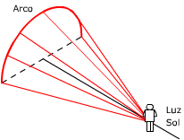

| El arco iris se debe a la dispersión de la luz
del Sol por las gotas de agua suspendidas en el aire
Supongo que esta es la contestación
que se espera para la pregunta. Si tienes curiosidad por una explicación
más detallada aquí va:
|
Los rayos del Sol que llegan paralelos a la gota
se refractan al llegar a la cara externa de la gota (1) y llegan
a la cara interna opuesta con un án-gulo superior al límite
por lo que se reflejan (2) hacia la otra cara interna y allí
se refractan al salir al aire (3)
Descartes tuvo la paciencia de calcular la trayectoria de cada
uno de los rayos y descubrió que la mayoría de ellos
emergían de la gota en una di-rección que formaba
42º con la dirección de los rayos del Sol
|
 |
Siempre que miremos en una dirección que forme 42º
con los rayos del Sol recibiremos la luz dispersada por las gotas
de agua. En el espacio, el con-junto de todas las direcciones que
forman 42º con una dada forman la superficie de un semicono
cuya base veremos como un arco luminoso
Así se explica el 'arco', ahora veamos el 'iris'... |
Al penetrar el rayo de luz en la gota de agua cada color
se refracta con un ángulo distinto y en conse-cuencia las trayectorias
de los rayos dentro de la gota serán diferentes y los rayos que
salen de la go-ta formarán con la dirección de la luz del
Sol ángulos ligeramente diferentes de 42º.
Para entendernos: mirando en dirección 41.5, 42, 42.5º
veremos respectivamente arcos de color azul, amarillo o rojo... (Los valores
están dados a lo loco) |